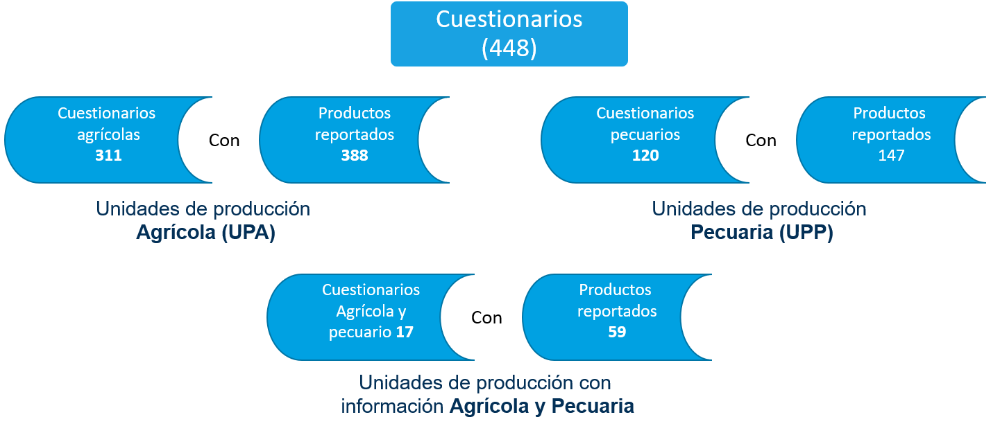

Consideración inicial acerca de los resultados obtenidos:
El siguiente contenido corresponde al análisis de los datos
recopilados en el operativo de la Prueba Piloto ERAMO 2021 para el
cuestionario aplicado a las unidades de producción Agrícola y
pecuario/ganadero. Es importante mencionar que estos resultados
no son considerados de carácter oficial ni estadísticamente
representativos ya que no provienen de una muestra
estadísticamente representativa.
Resumen de los cuestionarios captados:
Como resultado del procesamiento de la información, se identificaron
448 cuestionarios completos obtenidos en las unidades con actividad
tanto agrícola como pecuaria, de los cuales 311 son referidos
exclusivamente a unidades de producción agrícola, 120 a unidades de
producción pecuaria y los 17 restantes llevan de manera simultánea ambas
actividades de producción.
Se obtuvieron datos relacionados a la producción de 421 productos agrícolas, siendo 351 (83%) los que reportaron haber tenido pérdida en al menos uno de sus procesos de producción. En cuanto a las unidades de producción pecuaria, la cantidad de productos con pérdida correspondió a 128 (73.9%) de un total de 173 registros de productos.

Sobre estos registros es que se consideró nuestro universo de estudio, en el que, mediante un procesamiento analítico sobre las variables, se logró generar algunos indicadores y gráficos con la finalidad de compartir y difundir los resultados obtenidos de esta Prueba Piloto 2021.
4.1. Resultados de las Unidades de Producción Agrícola y Unidades de Producción Pecuaria
4.1.1. Unidades de producción que llevan registro en el manejo o pérdida de los productos
Del total de las unidades de producción encuestadas, una proporción del 39.1% declaró llevar un registro para el manejo o pérdida en sus productos agrícolas y/o pecuarios.
Se identificaron los parciales para cada uno de los apartados que contaron con registro para el manejo o pérdida de sus productos: 36% en agrícola y 47% en pecuario.
4.1.2. Procesos en los que las Unidades de Producción llevan registro para el manejo o pérdida de sus productos
- Se identificó una unidad de producción Agrícola, en la que lleva registro en todos los procesos.
Es importante mencionar que el cuestionario permitía seleccionar uno o más procesos de producción. En las unidades de producción agrícola, se identificó que el 96% de los productores llevaron registro en el proceso de Cosecha, en los procesos de Venta y Almacenamiento reportaron 34 y 29 puntos porcentuales, continuando con los procesos con menor frecuencia Selección/Empaque, Transporte y Otro Proceso con 22, 12 y 3 puntos porcentuales respectivamente.
- Sólo en 5 unidades de producción pecuaria declararon llevar registro en todos los procesos.
En el caso de las unidades de producción pecuaria, los procesos más comunes en los que se realiza registro en el manejo o pérdida de sus productos son: Nacimiento/Ordeña y Desarrollo/Engorda con 36 y 32 puntos porcentuales, los demás procesos como el Sacrificio/Muerte, Almacenamiento, Transporte y Otro proceso correspondieron a valores de 16, 15, 12 y 2 puntos porcentuales respectivamente.
4.1.3. Número de alimentos reportados por tipo de Unidad de Producción
La mayoría de las unidades de producción (80% aprox.), registró solamente un producto y en mínimos casos 4 o más productos.
4.1.4. Productos reportados
Se logró captar información de 53 diferentes productos cultivados y/o cosechados en las unidades de producción agrícola. Destacan por su frecuencia el Maíz grano, el Melón y el Frijol con 120, 67 y 31 registros (28.5%, 15.9% y 7.3% respectivamente), el resto de los productos se muestran en la siguiente gráfica, acompañados con su frecuencia.
En el apartado pecuario, se logró captar 18 diferentes productos criados, cultivados, recolectados y/o vendidos, destacando por su frecuencia la Carne de bovino, la Leche de bovino y la Carne de porcino (36.4%, 15% y 12.7% respectivamente), el resto de los productos se muestran en la siguiente gráfica, acompañados con su frecuencia.
4.1.5. Hectáreas cultivadas/sembradas de los productos reportados por las Unidades de Producción Agrícola
Una de las principales variables captadas en la ERAMO 2021 es la referida al número de hectáreas ocupadas para el cultivo/siembra en cada uno de los producto declarados. La siguiente gráfica muestra el comportamiento de esta variable, donde el Maíz grano es el producto agrícola con mayor número de hectáreas ocupadas para el cultivo/siembra y el que tuvo representatividad en la mayoría de las entidades participantes.
4.1.6. Destino de consumo de los productos reportados por Unidades de Producció
Algo relevante sobre cada producto reportado, es conocer el destino de consumo al cual fue dirigido, ya sea para el consumo humano, consumo animal, combinación de estos e inclusive desconocimiento por parte del informante.
4.1.6.a. Destino de los productos declarados en las Unidades de Producción Agrícola
La mayor proporción de los productos es destinada para el consumo humano con un 66%.
4.1.6.b. Destino de los productos declarados en las Unidades de Producción Pecuaria
El destino de consumo en los productos pecuarios fue en su mayoría para el Consumo Humano con 89 puntos porcentuales.
- Cabe mencionar que la producción de alimentos obtenida en las unidades pecuarias, se aprovecha casi en su totalidad, así también, se identificó que de los productos reportados ninguno fue en exclusiva para consumo animal.
4.1.7. Mercado objetivo de los productos reportados por las Unidad de Producción
El mercado objeto de los productos reportados es también una característica que la Prueba Piloto 2021 recabó, las opciones de respuesta fueron Mercado minorista; Mercado mayorista; Dirigido a entidades de gobierno nacionales; y Mercado extranjero.
4.1.7.a. Mercado objetivo de los productos reportados en las Unidades de Producción Agrícola
De acuerdo a la gráfica anterior, el mercado minorista predominó con un valor porcentual de 50.6, para el mercado de entidades de gobierno nacionales, reportó sólo el 1.19% del total de la producción, ya que para este rubro se consideran sólo a los productores de maíz y frijol registrados en convenio con DICONSA.
4.1.7.b. Mercado objetivo de los productos reportados por Unidades de Producción Pecuaria
Situación similar ocurre en la producción pecuaria, donde el mercado minorista es el que reportó 72.8 puntos porcentuales sobresaliendo de las demás categorías.
El mercado extranjero y el de entidades de gobierno nacionales obtuvieron ambos un valor de 1.73%, ya que estás aplican principalmente en los estados colindantes con la frontera norte del pais, así como aquellos productores de leche de bovino que se encontraron en convenio con LICONSA, respectivamente.
4.1.8. Cosecha esperada vs. Cosecha final obtenida en las Unidades de Producción Agrícola
Una forma de identificar la PDA en los productos reportados, es por medio de las variables cosecha esperada-producción esperada (la que se esperaba obtener) y cosecha final-producción obtenida (la que se obtuvo finalmente). En la siguientes gráficas se muestra el comportamiento de estas variables para ambos apartados.
El maíz grano al ser el producto más reportado, fue el que acumuló
mayor número de toneladas, tanto esperadas como producidas. Productos
considerados que obtuvieron ganancias fueron la manzana, sandía
y cebolla, ya que la registraron mayor cantidad de toneladas
cosechadas que las esperadas.
4.1.9. Producción esperada vs. Producción obtenida en Unidades de Producción Pecuaria
Se puede observar que la producción de huevo
finalmente obtenida es mayor a la producción esperada, esto también
sucedió para los productos ganado porcino (carne) y
ovino.
4.2. Unidades de Producción Agrícola. Pérdidas, causas y destino
Uno de los objetivos primordiales de la Prueba Piloto ERAMO 2021, es el identificar el volumen de la pérdida de los productos reportados, las principales causas, así como principales destinos de los residuos. Un hallazgo interesante es que el concepto de Pérdida de alimentos es muy ambiguo entre los productores de alimentos, ya que gran parte de estos la perciben de diferente manera.
4.2.1 Pérdidas
La pérdida, se refiere a todas las cantidades de productos alimenticios, comestibles para las personas y el ganado que, directa o indirectamente salen por completo de la cadena de producción/suministro posterior a la cosecha/sacrificio (de ganado) al ser desechadas, incineradas o retiradas de algún otro modo y no vuelven a ingresar con ningún otro propósito (como alimento animal, uso industrial, etc.). (FAO, 2019).
4.2.1.1 Porcentaje de productos con al menos un registro de pérdida en alguno de sus proceso de producción
De los productos reportados, una proporción del 28% afirmó no haber tenido pérdida en su producción, es decir, casi 3 cuartas partes del total de productos agrícolas (72%) reportaron pérdida.
4.2.1.2. Porcentaje global de pérdida con respecto a las toneladas cosechadas
4.2.1.2.a. Porcentaje global de pérdida
El porcentaje global de pérdida se calcula a partir de la sumatoria de los valores de pérdida y los valores de la cosecha finalmente obtenida, obteniendo que cerca del 17% de los alimentos agrícolas producidos no lograron concluir su proceso dentro de la cadena de abasto alimentaria.
4.2.1.2.b. Porcentaje de pérdida de alimentos (toneladas) en UP Agrícola por proceso
4.2.1.2.c. Volumen de pérdida por proceso de producción
4.2.1.3. Porcentaje de pérdida por producto alimenticio reportado
El Ajo y el Dátil reportaron valores porcentuales superiores al 90%, esto se debe a que son productos con poca representatividad y los pocos registros presentan un alto porcentaje de pérdida.
Otra forma de mostrar estos datos es a través del diagrama de cajas y bigotes, en él se muestran los datos atomizados, así como algunas medidas de tendencia central.
4.2.2. Principales causas de la pérdida en los productos agrícolas declarados
La causa de la pérdida es una de las variables prioritarias en esta prueba. A partir de un análisis a las respuestas emitidas por las unidades de producción en cada uno de sus productos es que se logró construir un catálogo de causas de la pérdida en los productos alimenticios agrícolas.
Los Factores meteorológicos, Plagas y
enfermedades y Calidad del producto, son las
principales causas de la pérdida de alimentos para los productores
agrícolas.
4.2.3. Principales destinos de la pérdida en los productos agrícolas reportados
Al igual que la causa de la pérdida de los productos alimenticios, el destino de los residuos alimenticios es también una de las variables principales. A partir del comportamiento de las respuestas obtenidas por los informantes se logró definir el respectivo catálogo.
De acuerdo con la gráfica anterior, las categorías Desecho, basura y No hubo producción, son los principales destinos de los residuos alimenticios agrícolas, con un valores porcentuales de 34.8 y 27.3 respectivamente.
4.3. Unidades de Producción Pecuaria. Pérdidas, causas y destinos
Conocer el volumen de pérdida de los productos pecuarios, las principales causas que lo originan, así como el destino final de estos, es parte de los objetivos de la Prueba Piloto ERAMO 2021, esto permite identificar cuáles son los factores que interrumpen el ciclo de producción provocando que estos alimentos no lleguen a ser consumidos.
4.3.1. Pérdidas reportadas
4.3.1.1. Porcentaje de productos con al menos un registro de pérdida en alguno de sus proceso de producción
4.3.1.2. Porcentaje global de pérdida con respecto a las toneladas producidas
4.3.1.2.a. Porcentaje global de pérdida de alimentos en UP Pecuaria
El porcentaje global de pérdida de alimentos en el apartado pecuario es de 1.56%, este resultado concuerda con las cifras estimadas por los expertos, mencionando que la mayor parte de la pérdida de alimentos está presente en las Unidades de Producción Agrícola.
4.3.1.2.b. Porcentaje de pérdida por proceso de producción
La mayor cantidad de pérdida de alimentos se da durante el Nacimiento/Ordeña con 63.8%, seguido del proceso de Desarrollo/Engorda con el 25%.
4.3.1.2.c. Volumen de pérdida por proceso de producción
4.3.1.3. Porcentaje de pérdida por producto alimenticio
En las siguientes gráficas se aprecia el porcentaje de pérdida para cada uno de los productos reportados (4.3.1.3.a.), así como los datos atomizados (4.3.1.3.b.).
4.3.2. Principales causas de la pérdida en los productos pecuario reportados
El análisis de las respuestas obtenidas referentes a las principales causas de pérdida para los productos alimenticios pecuarios permitió la construcción de un catálogo de causas reportadas a partir de una categorización, los resultados se presentan a continuación.
Las Enfermedades y Muerte es la principal causa de la pérdida de alimentos en el sector pecuario con más del 75%
4.3.3. Principales destinos de la pérdida en los productos pecuario reportados
Para esta variable, también se realizó un análisis de las respuestas emitidas por parte del informante para una categorización permitiendo la construcción del respectivo catálogo. El resultado obtenido se muestra en la siguiente gráfica.
EL Desecho, basura es el principal destino de la pérdida de alimentos para el sector pecuario, con más del 45% de la pérdida global.
4.4. Bancos de alimentos, redes alimentarias y percepción ambiental
Se logró identificar, entre los productores, el conocimiento relacionado a los Bancos de alimentos, las Redes alimentarias, así como a la percepción ambiental y sus acciones como productores de alimentos para evitar o disminuir la pérdida de alimentos.
4.4.1. Conocimiento sobre bancos de alimentos en las unidades de producción
Los Bancos de Alimentos se definen como entidades sin ánimo de lucro que reciben y recogen alimentos excedentes de comercios, empresas o personas para repartirlos con las personas que los necesitan.
Del total de unidades de producción, el 28% indicó tener conocimiento
sobre los bancos de alimentos. Por el contrario, más del 70% indicó no
tener conocimiento sobre los bancos de alimento, el porcentaje restante
no dio una respuesta (ND).
4.4.2. Conocimiento sobre Redes alimentarias en las unidades de producción
Estás se refieren a las iniciativas organizadas para responder a los retos del sistema agroalimentario actual, involucrando a productores, transformadores y consumidores, con la intención de construir sistemas alimentarios más locales, justos, democráticos y sustentables.
El resultado muestra una proporción del 9.15% sobre el total de unidades de producción que indican tener conocimiento en el tema. Cerca del 83.3% no posee conocimiento al respecto, el porcentaje restante no dio respuesta (ND).
4.4.3. Otras alternativas de manejo
4.4.3.1. Porcentaje de productores que llevan a cabo acciones alternativas para el manejo de sus productos
El 20.8% de las unidades de producción indicaron llevar a cabo acciones alternas para evitar o disminuir la pérdida en la producción de alimentos agropecuarios.
Al analizar las respuestas de los productores, se logró diseñar dos catálogos, uno para el apartado agrícola y otro para el apartado pecuario, el comportamiento de las variables se muestra en las siguientes gráficas.
4.4.3.1.a. Alternativas para el manejo de los productos agrícolas
Los productores agrícolas optan por Transformar los productos, seguido de Mejorar prácticas e insumos de producción.
4.4.3.1.b. Alternativas para el manejo de los productos pecuario
Las alternativas Transformar los productos y Mejorar prácticas de producción, son las más reportadas por los productores pecuarios, con un 32.2% en ambos casos.
4.4.4. Conocimiento sobre Campañas para reducir la pérdida de alimentos
Las campañas promueven la disminución de la pérdida o desperdicio de alimentos por parte de los productores. Sólo el 26.8% de los productores tienen conocimiento sobre este concepto.
4.4.5. Medidas para evitar o disminuir la pérdida de alimentos
4.4.5.1. Porcentaje de unidades de producción que ha tomado medidas para evitar o disminuir la pérdida de alimentos
Más del 50% de las unidades de producción han tomado medidas para evitar o disminuir la pérdida de alimentos, principalmente a través de Mejorar prácticas de producción y Mejorar insumos de producción en ambos apartados.